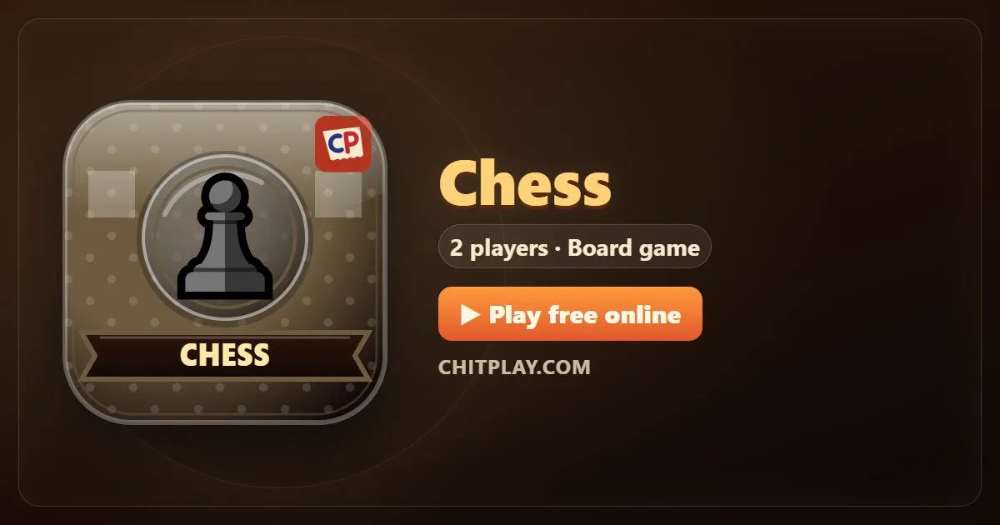

Chess tips for beginners: ten habits that win games
Updated 2026-11-16

Most chess games between beginners are not decided by deep plans. They are decided by pieces left unprotected and simple tactics missed. Fix those and you will beat players who know far more openings than you.
These ten habits cover the opening, the middle game and the end. They are the same whether you play a friend or ChitPlay’s computer at your level.
▶ Play Chess free Full Chess rules
1. Before every move, look at what your opponent just did
Ask: what does that move attack? What does it threaten next? Many games are lost by answering a move without noticing it was a threat.
2. Before every move, check for loose pieces
Look at each of your pieces: is it attacked, and is it defended? A piece attacked more times than it is defended will be lost. Do the same check on your opponent’s pieces: a loose piece there is a free win.
3. Control the centre
Pawns and pieces in the middle of the board reach more squares. Moves like e4 and d4 (or e5 and d5) give your pieces room to come out.
4. Develop knights and bishops early
Bring out a different piece with each of your first moves. Moving the same piece twice in the opening, or bringing the queen out early, gives your opponent time to develop with tempo.
5. Castle in the first ten moves
Castling tucks the king away and connects the rooks. A king left in the centre is the target of many quick attacks.
6. Trade when you are ahead
If you have more material, exchange pieces. The fewer pieces left, the bigger your advantage counts. When behind, avoid trades and look for tactics.
7. Look for forks, pins and skewers
A fork attacks two things at once; a pin stops a piece moving because something more valuable stands behind it; a skewer is a pin in reverse. Knights are the best forking pieces. Check for these every move, for you and against you.
8. Rooks belong on open files
A file with no pawns on it lets a rook reach deep into the enemy position. Put your rooks there, and double them if you can.
9. Learn two checkmates
King and queen against king, and king and rook against king. Push the lone king to the edge, keep your king close, and avoid stalemate by always leaving it a legal move until the mate.
10. Use the clock, do not race it
With a clock, spend your time on the moves that change the game: captures, checks, threats. Play quick, natural moves when nothing is happening. In ChitPlay you can also play with no clock while you learn.
Questions
What is the best opening for beginners?
Any opening that controls the centre, develops knights and bishops quickly and castles early. The Italian Game (1.e4 e5 2.Nf3 Nc6 3.Bc4) is a good first choice.
How do I stop losing pieces?
Before each move, check every piece of yours: is it attacked, and is it defended enough? This one habit stops most blunders.
How do I get better at chess quickly?
Play slower games, check for loose pieces every move, learn the basic checkmates and look at your lost games to find the move where things went wrong.
More strategy guides
Ludo strategy · Call Break strategy · Carrom strategy · Chit game strategy